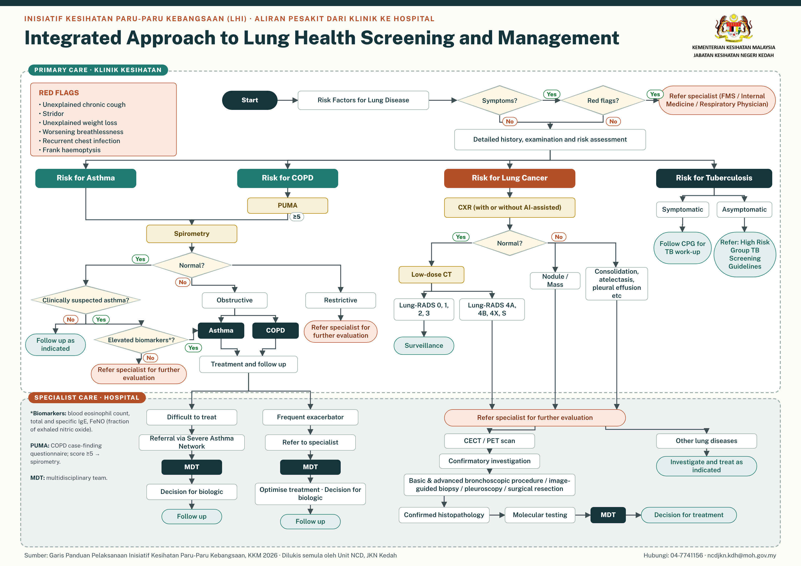

Hub Rujukan Sehenti
Inisiatif Kesihatan Paru-paru Kebangsaan (LHI) Negeri Kedah
Semua rujukan pelaksanaan saringan paru-paru di satu tempat: punca kuasa, garis panduan, carta alir untuk dicetak, pemetaan fasiliti dan pencapaian saringan semasa.
Tentang LHI di Kedah
Mengesan penyakit paru-paru lebih awal
LHI ialah agenda strategik KKM 2025–2030 untuk memperkukuh pencegahan, saringan awal, diagnosis dan rawatan empat penyakit paru-paru. Di Kedah, Klinik Kesihatan menjadi pintu masuk saringan yang terus dihubungkan dengan perkhidmatan kepakaran hospital.
Empat penyakit sasaran
Kanser paru-paru didiagnos pada tahap 3–4. Kelangsungan hidup 5 tahun: 4% (tahap 4) berbanding 39.9% (tahap 1).
COPD: purata kadar insiden; antara 10 punca utama kematian dan sangat kurang didiagnos.
Asma: prevalens dewasa 2023, lebih 1.4 juta orang dewasa.
Tibi: kes per 100,000 populasi; kematian 7.6 per 100,000 (2024).
Sasaran 2030
Tahap 3–4 → 1–2Stage-shift diagnosis kanser paru-paru ke tahap awal.
Kematian akibat kanser paru-paru, Tibi dan COPD.
Kurangkan serangan akut, kemasukan dan kemasukan semula wad.
Fasa 1 · 2026
Saringan di KK berfasiliti X-ray, minimum 1 saringan sehari (5 seminggu) bagi setiap KK. KK tanpa X-ray menyaring dan merujuk ke KK berdekatan.
Siapa disaring
Warganegara ≥18 tahun yang berisiko (perokok, klien KBM, komorbid, hazard pekerjaan) atau bergejala (batuk ≥2 minggu, hemoptisis, sesak nafas).
Fasa 2 · 2027
Diperluaskan ke semua KK di Negeri Kedah, tertakluk kepada penilaian pelaksanaan dan kapasiti fasiliti.
Aliran pesakit
Aliran pesakit dari Klinik ke Hospital
Algoritma bersepadu saringan dan pengurusan penyakit paru-paru (asma, COPD, kanser paru-paru dan Tibi), dari peringkat Klinik Kesihatan hingga rawatan pakar di hospital. Klik pada carta untuk paparan penuh.

Punca kuasa & garis panduan
Dokumen rujukan
Rujuk dokumen ini sebagai asas pelaksanaan. Sekiranya terdapat percanggahan, Garis Panduan KKM diguna pakai.
Panduan mengikut pasukan
Apa yang perlu dilakukan oleh pasukan anda
Pilih pasukan untuk melihat tugas utama, perkara yang perlu dikemas kini dalam NaLuRy dan carta alir yang berkaitan.
Untuk dicetak
Carta alir & rujukan pantas
Muat turun dan cetak untuk ditampal di bilik konsultasi atau jabatan. Versi A4 untuk pencetak pejabat (cetak pada Actual size / 100%); versi A3 untuk cetakan poster.
Pemetaan fasiliti
Fasiliti terlibat & laluan rujukan
KK berfasiliti X-ray, KK tanpa X-ray, hospital rujukan LDCT dan hospital berkepakaran Respiratori serta Patologi Anatomik.
| Daerah | KK dengan X-ray | KK tanpa X-ray (rujuk ke KK X-ray) | Hospital LDCT | Respiratori & Patologi |
|---|
Pencapaian saringan
Dashboard saringan semasa
Data dikemas kini secara berkala daripada pangkalan data saringan LHI Kedah.
Saringan mengikut daerah
Bilangan saringan
KPI mengikut daerah
% perokok layak & bersetuju yang menjalani X-ray · garis putus = sasaran 80%
* Perokok termasuk bekas perokok (active, ex_smoker_lt15, ex_smoker_gt15).
Hubungi
Unit Kawalan Penyakit Tidak Berjangkit
Jabatan Kesihatan Negeri Kedah
Jalan Kuala Kedah, Simpang Kuala, 05400 Alor Setar, Kedah